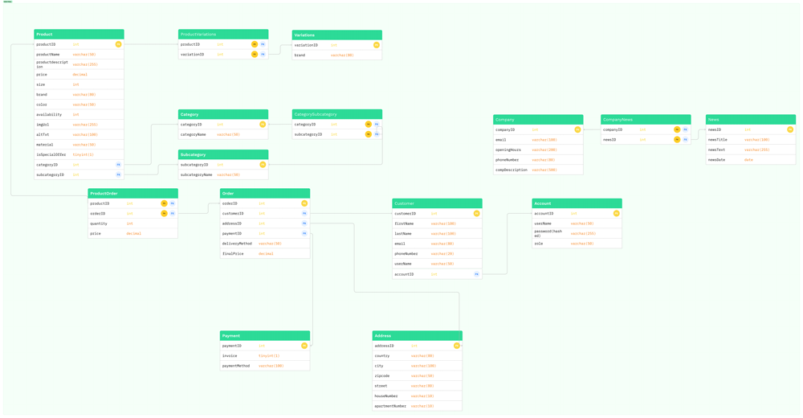
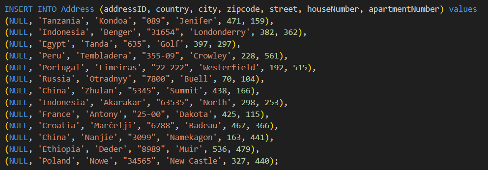
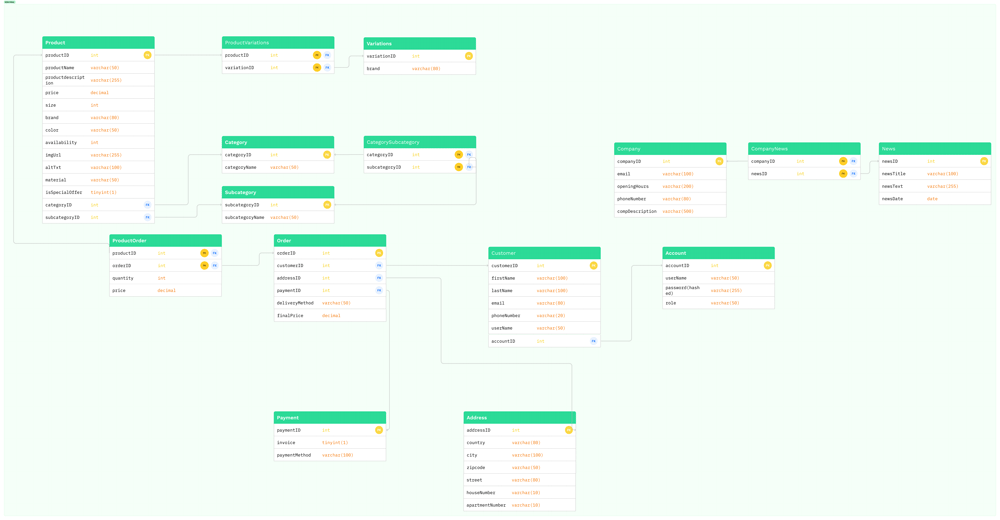
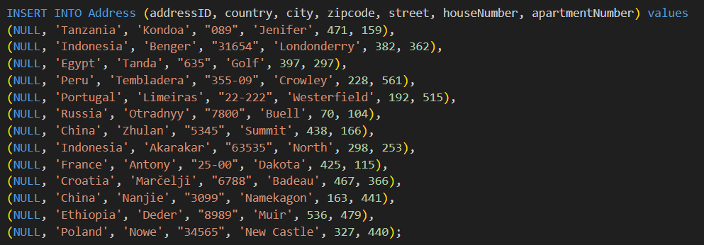

Webshop database
Year:
2023
Tasks:
DB Design
Tech:
MySQL
GitHub repository
The goal of this project was to design the MySQL database for a fictional Webshop selling bottle caps. XD
ER diagram was created with entities, atribiuts, cardinality and appropriate relationships.
Based on the ER diagram a Relational Data Model was created with fitting data types, foreign keys and juction tables.
Last step was to write the script with the actual data.
Whole process was iterative. Going back and forth between ER diagram, RDM and the actual database script adding tables and rows, as well as changing data types to make the database more optimized and run without any issues.
 


